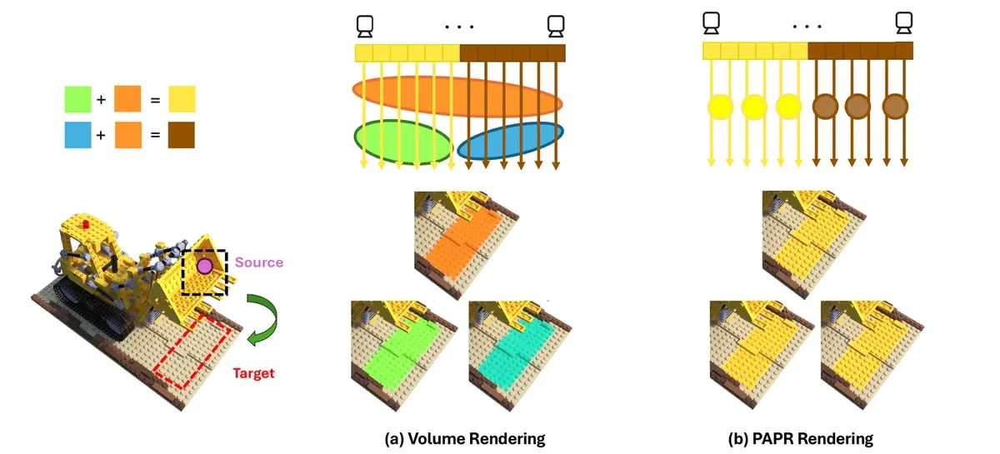
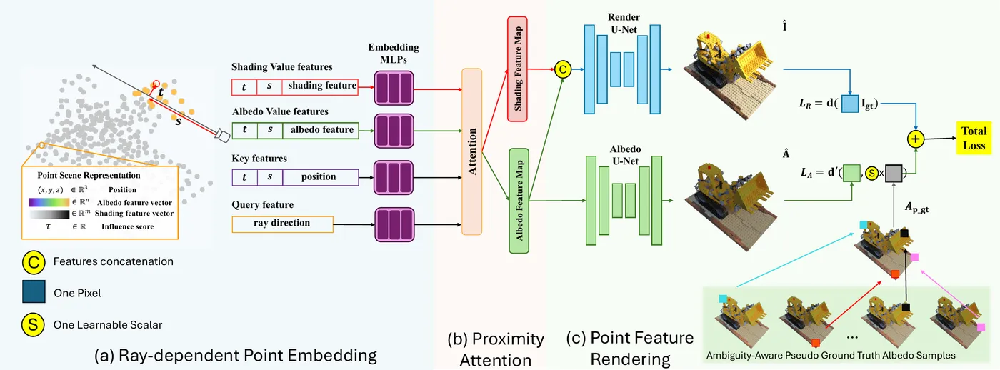
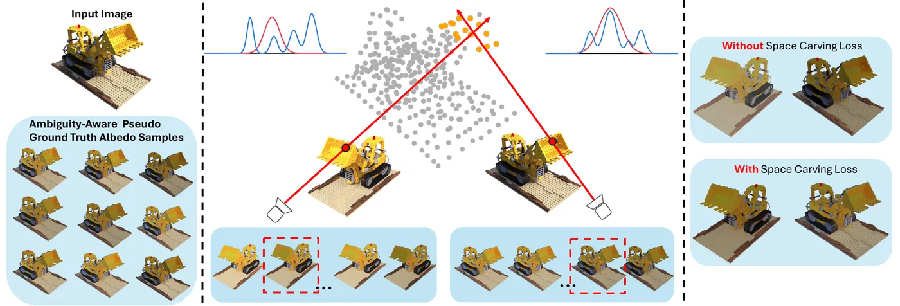
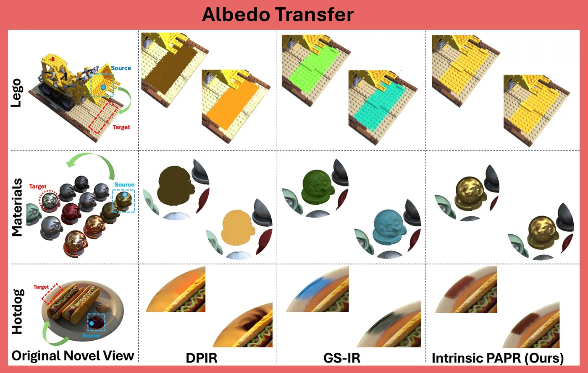
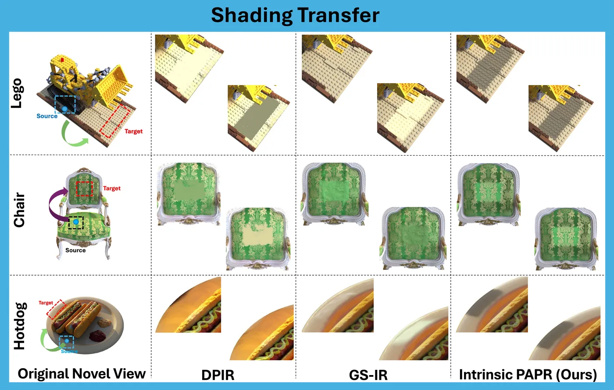
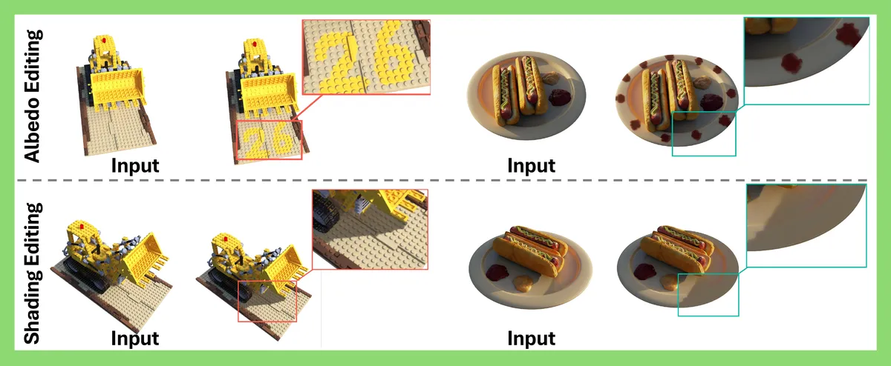
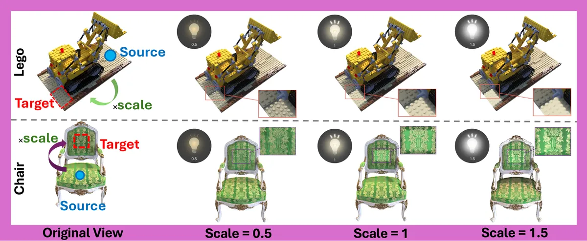
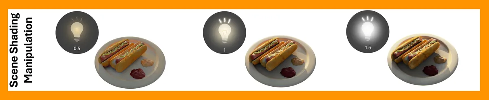
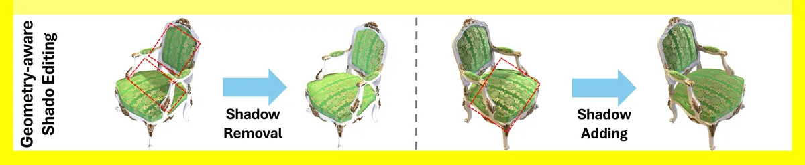
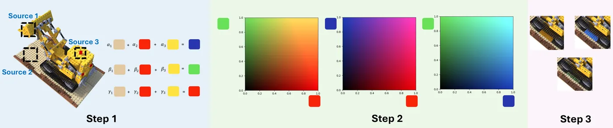

Intrinsic PAPR: Tackling Misattribution in 3D Intrinsic Decomposition via Proximity Attention Point Rendering
TL;DR. Volume rendering composites translucent primitives along each ray and supervises only the aggregated colour, so one primitive’s albedo and shading can be wrong while the pixel is right. Adding views does not resolve it, because near-coincident primitives render identically from every direction. Intrinsic PAPR renders an opaque surface with proximity attention and predicts appearance at the ray–surface intersection, making each point identifiable.
Abstract
Recent point-based intrinsic decomposition and inverse rendering methods have advanced the modelling of the shading and albedo of 3D scenes. However, we identify a fundamental limitation: these methods suffer from a misattribution issue, where individual primitives learn incorrect appearance features despite producing correct aggregated renderings. We show that the root cause lies in volume rendering, which aggregates translucent primitives along each ray and only supervises the final colour, preventing direct supervision of individual primitive features. To address this, we propose Intrinsic PAPR, a robust intrinsic decomposition framework which leverages Proximity Attention Point Rendering (PAPR) to enable direct per-point supervision. Unlike volume rendering approaches, PAPR eliminates translucent primitives and directly predicts appearance at ray-surface intersections, enabling accurate supervision to the feature of each individual point. Our method incorporates a 2D albedo prior adapted with conditional Implicit Maximum Likelihood Estimation (cIMLE) to handle monocular ambiguities, and employs a space carving loss to ensure multi-view consistency. Extensive evaluations on synthetic and real-world datasets demonstrate that Intrinsic PAPR outperforms point-based inverse rendering, NeRF-based intrinsic decomposition, and diffusion-based PBR methods in novel view synthesis and albedo estimation while resolving the misattribution issue.
The misattribution problem
Translucent volumetric primitives are supervised only after they are accumulated along a ray. Individual points can therefore store the wrong albedo or shading as long as the sum looks right. Extra training views do not resolve this: coincident primitives remain observationally equivalent from every camera.

(a) Volume rendering supervises only the transmittance-weighted sum along a ray, so individual translucent primitives can learn incorrect features whose errors cancel in the aggregate. (b) Proximity attention connects nearby extent-free points into an opaque surface and predicts appearance at the ray–surface intersection, so the photometric residual on a ray backpropagates primarily to the point that dominates it.
Method
Each point stores position, albedo, shading, and an influence score. Proximity attention aggregates nearby points into albedo and shading maps; RGB is their product. A 2D albedo prior with cIMLE proposes multiple hypotheses per view; a space-carving loss keeps the 3D albedo consistent across cameras.

Rendering pipeline: ray-dependent embeddings, proximity attention, then albedo and RGB decoding.

Space-carving loss selects cross-view consistent albedo modes from the multi-hypothesis 2D prior.
Results
Headline numbers from the camera-ready paper. Synthetic NVS and albedo: 35.00 and 31.21 dB, against 24.42 and 22.28 dB for MAIR++. The paper reports more than a 4× reduction in albedo- and shading-transfer error over a leading 3DGS-based method, and the margin holds at every view count from 25 to 200.
Per-point albedo and shading transfer
If a primitive truly owns its albedo or shading, copying that feature to another region should reproduce the source attribute. Volumetric methods drift; ours stays faithful. Use the arrows to browse additional scenes.

Per-point albedo transfer copies the albedo features of randomly chosen source points onto a target region. Correct attribution means the target reproduces the source albedo independently of shading. Volumetric baselines, supervised only after transmittance-weighted aggregation, show colour drift and high variability across transfers.

Per-point shading transfer probes whether illumination is bound to individual primitives and local geometry. The volumetric baselines show inconsistent patterns and artefacts indicative of mixed attribution along the ray, while our transferred shading stays geometry-consistent and tracks the source primitive.
Albedo transfer
Lego
Hotdog
Materials
Ficus
Chair
Drums
Shading transfer
Lego
Hotdog
Chair
Ficus
Drums
Editing as a consequence of correct attribution
Precise per-primitive attribution is what makes freeform editing practical. A user paints an arbitrary region on one view; those pixels are mapped to the underlying 3D points and their albedo or shading features are modified, so the edit lives in the 3D representation and stays multi-view consistent, geometry-aware and localized.





(a) Freeform region edits. (b) Point-level shading intensity. (c) Scene-level shading scale. (d) Shadow add/remove. (e) Unseen colours via albedo interpolation.
Point-level shading intensity control
Shading intensity is edited by scaling the shading feature vectors of selected primitives before transferring them to a target region (source in blue, target in red). This modulates contrast locally in a predictable, geometry-consistent way, from subtle brightening to strong darkening.
Chair
Lego
Hotdog
Scene-level shading intensity control
Applying a uniform scale to the shading features of all points produces a coherent scene-level adjustment while leaving geometry and albedo unchanged. Decreasing the scale reduces contrast; increasing it enhances contrast across the scene.
Lego
Hotdog
Chair
Materials
Mic
Drums
BibTeX
@inproceedings{moazeni2026intrinsicpapr,
title = {Intrinsic {PAPR}: Tackling Misattribution in 3D Intrinsic Decomposition
via Proximity Attention Point Rendering},
author = {Moazeni, Alireza and Peng, Shichong and Zhang, Yanshu
and Vashist, Chirag and Li, Ke},
booktitle = {European Conference on Computer Vision ({ECCV})},
year = {2026}
}